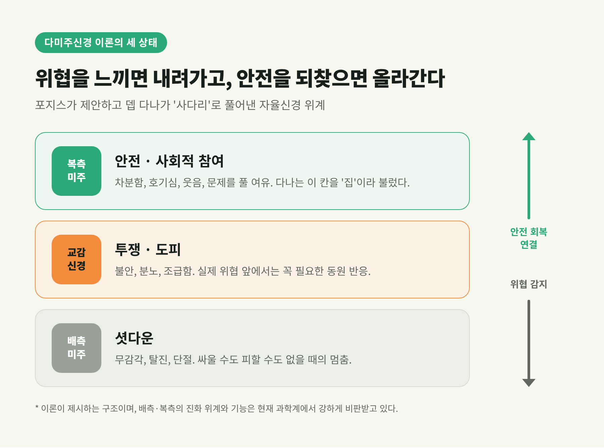
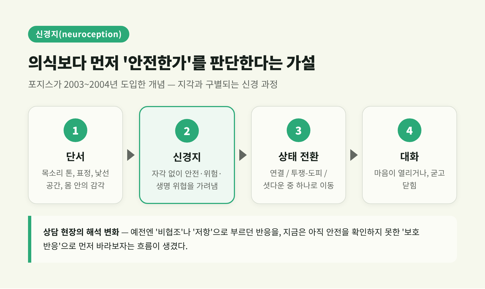
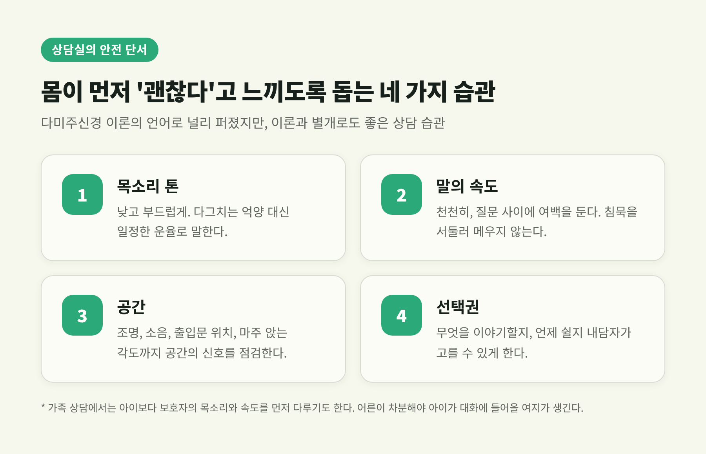
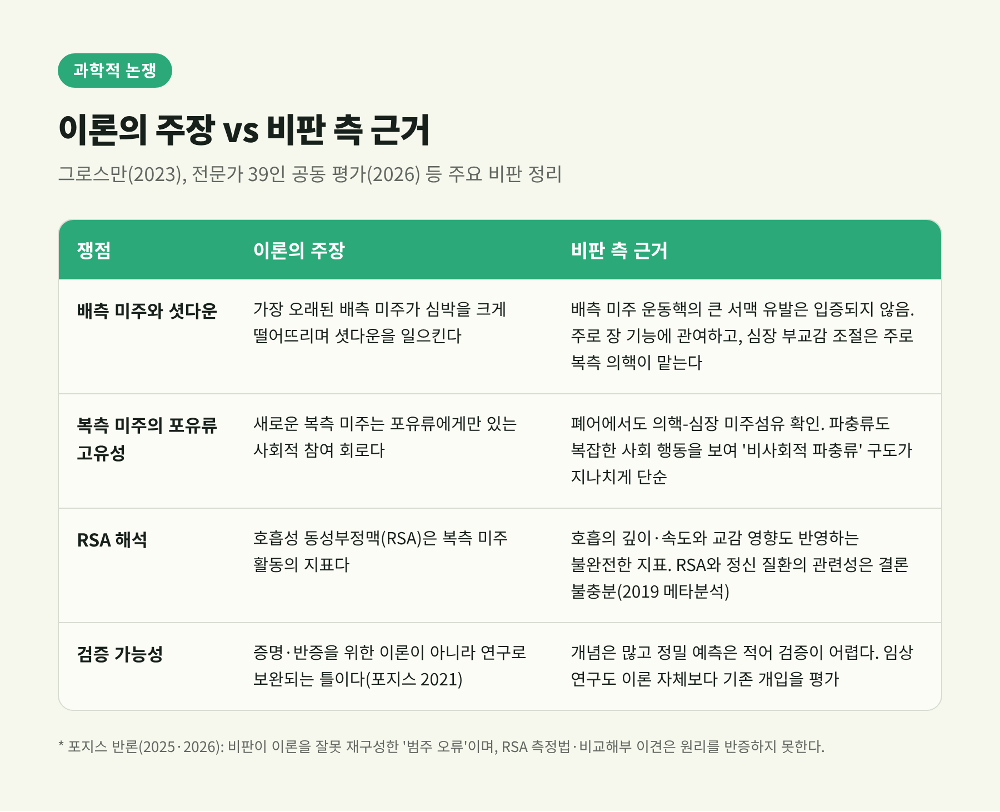
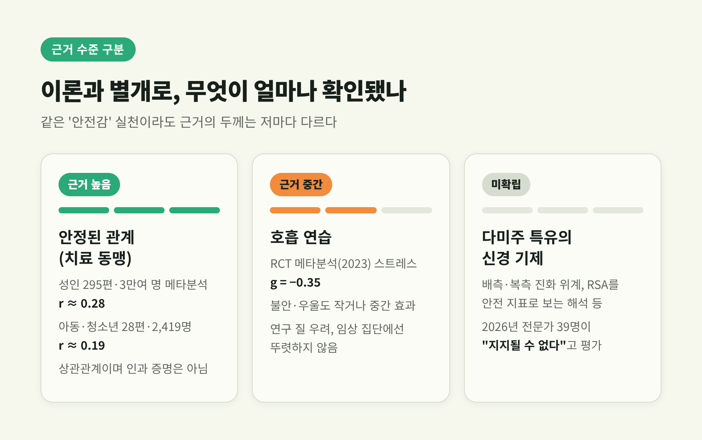

다미주신경 이론과 상담의 안전감 — 몸이 먼저 편해야 대화가 열릴까

오늘은 상담 현장에서 자주 들리는 '다미주신경 이론(Polyvagal Theory)'을 정리해 보려 합니다. 핵심 주장은 간단합니다. 몸이 먼저 안전하다고 느껴야 마음을 여는 대화가 가능하다는 것입니다. 다만 이 이론은 지금 과학계에서 거센 논쟁 한가운데 있습니다. 그래서 이 글은 이론의 내용, 현장의 쓰임, 비판, 그리고 이론과 상관없이 믿을 만한 실천을 차례로 나눠 살펴봅니다.
3줄 요약
- 다미주신경 이론은 1994년 스티븐 포지스가 제안했고, 안전·투쟁-도피·셧다운이라는 세 상태와 '신경지' 개념으로 상담 언어를 바꿔 놓았습니다.
- 그러나 2023년 이후 해부학·진화·심박 지표 해석에 대한 비판이 쌓였고, 2026년에는 전문가 39명이 "지지될 수 없다"는 공동 평가를 냈습니다.
- 현장에서는 '증명된 신경 지도'가 아니라 '유용한 비유'로 쓰는 것이 안전하며, 안정된 관계처럼 이론과 별개로 근거가 탄탄한 실천을 중심에 두는 편이 좋습니다.
■ 다미주신경 이론은 어떻게 시작됐나
출발점은 1994년 10월입니다. 미국의 정신생리학자 스티븐 포지스가 정신생리학회 회장 연설에서 처음 발표했고, 이듬해 학술지 Psychophysiology에 논문으로 실렸습니다.
이름의 '다(多)미주'는 미주신경이 하나의 덩어리가 아니라 성격이 다른 갈래로 나뉜다는 뜻입니다. 포지스는 자율신경계를 세 회로의 위계로 설명했습니다.
- 복측 미주(ventral vagal) — 사회적 참여. 가장 새로운 회로로, 포지스는 포유류에게 고유하다고 보았습니다. 표정, 운율 있는 목소리, 사람 목소리를 잘 듣게 하는 중이 근육과 연결된다고 설명합니다. 차분하고 연결된 상태입니다.
- 교감신경 — 투쟁-도피. 위험을 느끼면 몸을 움직일 준비를 시킵니다. 심장이 빨라지고 근육이 긴장합니다.
- 배측 미주(dorsal vagal) — 셧다운. 가장 오래된 회로로 보았습니다. 싸울 수도 도망칠 수도 없을 때 멈추고, 무감각해지고, 꺼지는 반응과 연결했습니다.
이 세 회로는 순서대로 작동한다고 주장합니다. 안전 회로가 버티지 못하면 투쟁-도피로, 그마저 실패하면 셧다운으로 내려간다는 것입니다. 포지스는 이를 신경학자 잭슨의 '역방향 진화(dissolution)' 원리로 설명했습니다.

■ 의식보다 먼저 판단하는 '신경지'
이 이론에서 상담 현장에 가장 큰 영향을 준 개념은 '신경지(neuroception)'입니다. 포지스가 2003~2004년 논문에서 도입한 말입니다.
그의 정의로는 신경지는 '지각과 구별되는 신경 과정'입니다. 환경과 몸 안의 신호를 안전·위험·생명 위협으로 가려내고, 의식하지 못하는 사이에 자율신경 상태를 바꿔 버린다는 것입니다.
예를 들어 보겠습니다. 상담실 문을 연 청소년이 이유 없이 팔짱을 끼고 대답을 짧게 합니다. 본인도 왜 그런지 설명하지 못합니다. 이 이론의 언어로는 낯선 공간, 높은 목소리, 어른과의 일대일 상황 같은 단서를 몸이 먼저 '위험'으로 읽었다고 해석합니다.
이 관점이 주는 가장 큰 선물은 해석의 방향입니다. 예전엔 이런 반응을 '비협조'나 '저항'으로 부르기 쉬웠습니다. 지금은 '보호 반응'으로 먼저 바라보자는 흐름이 생겼습니다. 아이를 고쳐야 할 대상이 아니라 아직 안전을 확인하지 못한 사람으로 보게 해 준 셈입니다.

■ 상담실과 교실에서는 이렇게 쓰입니다
이론을 임상 언어로 옮긴 대표 인물은 임상 사회복지사 뎁 다나(Deb Dana)입니다. 2018년 저서 『The Polyvagal Theory in Therapy』에서 그는 세 원리, 곧 위계·신경지·공동조절을 중심으로 이론을 풀어냈습니다.
사다리 비유가 가장 널리 퍼졌습니다. 맨 위 칸은 안전하고 연결된 상태로, 다나는 이곳을 '집'이라 불렀습니다. 호기심이 생기고 웃을 수 있으며 문제를 풀 여유가 있습니다. 가운데 칸은 불안·분노·조급함의 자리입니다. 실제 위협 앞에서는 꼭 필요한 반응이기도 합니다. 맨 아래 칸은 무감각과 탈진, 단절의 자리입니다.
내담자에게 "지금 사다리 어디쯤 계신 것 같나요"라고 묻는 것만으로도 대화가 달라진다는 보고가 많습니다. 자기 상태에 이름을 붙이고, 아래로 끌어내리는 단서와 작은 안전의 순간('글리머')을 찾아보는 연습이 뒤따릅니다.
공동조절(co-regulation) 도 핵심어입니다. 다나는 다른 사람과 연결되려는 욕구를 생존을 위한 생물학적 필수 조건으로 표현했습니다. 치료자의 차분한 조율이 그 자체로 안전 신호가 된다는 주장입니다.
현장에서 이 생각은 구체적인 습관으로 이어집니다.
- 목소리를 낮추고 말의 속도를 늦춥니다. 질문 사이에 여유를 둡니다.
- 정면으로 마주 앉기보다 비스듬히 앉을 자리를 고르게 합니다.
- 조명, 소음, 출입문 위치처럼 공간이 주는 신호를 점검합니다.
- 무엇을 이야기할지, 언제 쉴지 선택권을 내담자에게 줍니다.
학교에서도 비슷한 시도가 있습니다. 교사 출신의 한 저자는 스티커와 타임아웃 같은 행동 관리 대신, 문제 행동을 보호적 스트레스 반응으로 보는 접근을 소개했습니다. 시험 불안이 큰 학생에게 물이나 잠깐의 휴식 같은 선택지를 주고 규칙을 분명히 알려 주는 식입니다. "학생은 주변 어른의 신경계를 빌린다"는 표현도 썼습니다. 다만 이 글은 연구 결과가 아니라 경험에 기댄 소개였다는 점은 짚어 두어야 합니다.
가족 상담에서도 흔히 보이는 장면이 있습니다. 부모가 다그칠수록 아이가 더 굳어 버리는 경우입니다. 이때 상담자는 아이보다 부모의 목소리와 속도를 먼저 다루기도 합니다. 어른이 차분해져야 아이가 대화에 들어올 여지가 생긴다고 보기 때문입니다.

■ 과학계는 무엇을 문제 삼나
여기까지가 이론의 매력이라면, 지금부터는 한계입니다. 비판은 크게 세 갈래입니다.
첫째, 해부학과 진화의 근거입니다. 심리생리학자 폴 그로스만은 2023년 학술지 Biological Psychology에서 이론의 다섯 가지 기본 전제를 하나씩 반박했습니다. 배측 미주 운동핵이 심박을 크게 떨어뜨린다는 주장은 입증되지 않았고, 심장의 부교감 조절은 주로 복측의 의핵(nucleus ambiguus)이 맡는다는 것입니다. '오래된 배측, 새로운 복측'이라는 진화 순서도 흔들립니다. 폐어(lungfish)에서도 의핵에서 심장으로 가는 미주신경 섬유가 확인됐다는 연구가 있습니다. 같은 해 다른 연구진은 '비사회적인 파충류에서 사회적인 포유류로'라는 구도 자체가 지나치게 단순하다고 지적했습니다. 파충류도 복잡한 사회 행동을 보인다는 것입니다.
둘째, 심박 지표의 해석입니다. 이론은 호흡에 따라 심박이 빨라졌다 느려지는 현상, 곧 호흡성 동성부정맥(RSA)을 복측 미주 활동의 지표로 써 왔습니다. 비판 측은 RSA가 호흡의 깊이와 속도, 교감신경의 영향까지 함께 반영하므로 '미주 긴장도'를 곧바로 보여 주는 수치가 아니라고 봅니다. RSA 반응성과 정신 질환의 관계를 모은 2019년 메타분석도 결론을 내리기 어렵다는 쪽이었습니다.
셋째, 검증 가능성입니다. 포지스 자신도 2021년 논문에서 이 이론이 증명되거나 반증되도록 제안된 것은 아니라고 썼습니다. 한 임상심리학자는 관련 출판물 대부분이 리뷰와 가설적 적용이고, 요가나 음악 치료처럼 좋은 결과가 나온 연구도 이론 자체가 아니라 기존 개입을 시험한 것이라고 지적했습니다.
논쟁은 2026년 2월 한 단계 더 나아갔습니다. 그로스만을 포함한 전문가 39명이 Clinical Neuropsychiatry에 공동 평가를 실었습니다. 미주신경 생리, 진화, 척추동물 사회 행동 분야에서 초청받은 이들 중 한 명을 빼고 모두 참여했고, "이론의 주요 원칙이 과거나 현재의 지식으로 지지되지 않는다"는 데 전원이 동의했습니다. 이들은 셧다운과 해리 자체는 실재하는 현상이지만, 그 설명은 자율신경계 하나보다 뇌의 여러 중추를 가리킨다고 보았습니다.
포지스도 같은 호에서 반론을 냈습니다. 비판이 이론을 있는 그대로가 아니라 잘못 재구성한 모습을 공격하고 있으며, RSA 측정법이나 비교해부학을 둘러싼 이견은 측정 방식과 관점의 차이일 뿐 이론의 원리를 무너뜨리지 못한다는 주장입니다. 양쪽의 결론은 아직 하나로 모이지 않았습니다. 다만 생리학·진화 분야 전문가 다수가 비판 쪽에 서 있다는 점은 분명합니다.

■ '이론'이 아닌 '비유'로 쓸 때 지킬 것
그렇다면 상담에서 이 언어를 모두 버려야 할까요. 현장의 목소리는 엇갈립니다. 2023년 한 정신의학 학술지 에세이는 제목부터 "과학적으로는 의문이지만 실천에는 유용하다"고 적었습니다. 한 임상심리학자는 이론을 "확정된 생물학 지도가 아니라 하나의 틀로 가르친다"고 밝혔습니다.
저는 비유로 쓰는 것 자체보다 '어떻게' 쓰는지가 중요하다고 생각합니다. 몇 가지 주의점을 정리해 봅니다.
- 신경 기제를 단정하지 않습니다. "지금 배측 미주가 작동해서 그래요" 같은 설명은 현재 근거로 뒷받침되지 않습니다. "몸이 멈춰 버린 느낌" 정도의 경험 언어가 더 정확합니다.
- 자기진단 라벨로 쓰지 않습니다. '셧다운 상태'라는 말이 우울이나 해리에 대한 전문 평가를 대신할 수는 없습니다.
- 심박 측정값을 '안전 점수'처럼 다루지 않습니다. 심박변이도 수치로 마음 상태를 판정해 준다는 홍보는 경계하는 편이 좋습니다.
- 실험적인 틀이라는 점을 알립니다. 이 언어를 쓰는 상담자라면 내담자에게 논쟁 중인 이론임을 설명하고 동의를 구하는 것이 바람직합니다.
- 몸의 증상은 실재로 인정합니다. 2026년 공동 평가의 대표 저자도 가쁜 숨, 두근거림, 속 불편함, 근육 긴장은 진짜 증상으로 존중해야 한다고 말했습니다. 설명이 틀릴 수 있다는 것이 고통이 가짜라는 뜻은 아닙니다.
■ 이론과 별개로 근거가 탄탄한 실천
흥미로운 점은, 다미주신경 이론이 강조해 온 실천 상당수가 이론보다 먼저, 그리고 이론과 무관하게 근거를 갖고 있다는 것입니다. 다만 근거의 두께는 저마다 다릅니다.
안정된 관계 — 근거가 가장 두텁습니다. 성인 심리치료 연구 295편, 환자 3만 명 이상을 모은 2018년 메타분석에서 상담자와 내담자의 '치료 동맹'은 치료 성과와 꾸준히 관련됐습니다(상관계수 약 0.28). 아동·청소년 연구 28편, 2,419명을 분석한 같은 해 메타분석에서도 관련성이 확인됐습니다(약 0.19). 청소년 쪽 수치가 조금 작고, 둘 다 상관관계이지 인과를 증명한 것은 아닙니다. 그래도 평가 방식과 치료 접근, 나라가 달라도 일관되게 나타났다는 점에서 상담의 가장 단단한 토대라 할 만합니다.
호흡 연습 — 근거는 중간 수준입니다. 무작위 대조 시험을 모은 2023년 메타분석에서 호흡 연습은 스트레스(12개 연구, 785명), 불안, 우울을 작거나 중간 정도로 줄였습니다. 하지만 연구의 질에 대한 우려가 적지 않았고, 임상 집단에서는 효과가 뚜렷하지 않아 연구진도 치료로 권하기는 이르다고 했습니다. 느리고 긴 날숨이 몸을 진정시키는 데 도움이 된다는 생리학은 다미주신경 이론이 나오기 전부터 알려진 내용입니다.
명상·요가·이완 — 이론에 기대지 않습니다. 2026년 공동 평가 측도 이런 실천은 자율신경 설명과 상관없이 오래전부터 있었고 많은 사람이 도움을 받는다고 언급했습니다. 이 글에서 구체적인 효과 크기까지 다루지는 않았으니, 개별 효과는 따로 확인해 보시길 권합니다.
결국 상담실에서 목소리를 낮추고, 서두르지 않고, 선택권을 주는 일은 다미주신경 이론이 옳든 그르든 여전히 좋은 습관입니다. 바뀌어야 할 것은 그 이유를 설명하는 방식입니다.

■ 혼자 감당하기 어렵다면
이 글은 상담 이론과 그 논쟁을 소개하는 글이며, 진단이나 치료를 대신하지 않습니다. 불안, 무기력, 몸이 굳어 버리는 느낌이 오래 이어진다면 혼자 해석하기보다 전문 상담사나 정신건강의학과 의료진과 이야기해 보시길 권합니다.
- 자살예방상담전화 109 — 2024년 1월부터 운영된 통합 번호입니다.
- 정신건강위기상담전화 1577-0199 — 휴대전화로 걸면 가까운 정신건강복지센터로 연결됩니다.
- 청소년상담1388 — 9~24세 청소년과 보호자 누구나, 365일 24시간 무료입니다. 전화, 문자(1388), 카카오톡 채널 '청소년상담1388'로도 닿을 수 있습니다.
긴급한 위험이 있다면 112나 119에 먼저 연락하십시오.
정리하면 이렇습니다. 다미주신경 이론은 상담자들에게 몸을 먼저 살피라는 중요한 감각을 남겼습니다. 그러나 그것을 설명하는 신경 지도는 지금 과학의 검증을 통과하지 못하고 있습니다.
"안전감은 이론보다 관계에서 먼저 만들어진다" — 저는 이 문장이 논쟁의 어느 쪽에서도 크게 틀리지 않는다고 생각합니다.
이 이론을 계속 써도 되느냐고 물으신다면, 비유로서 겸손하게 쓴다면 그렇다고 답하겠습니다.
참고자료
- Wikipedia, Polyvagal theory
- Porges, S.W. (2021). Polyvagal Theory: A biobehavioral journey to sociality. Comprehensive Psychoneuroendocrinology
- Porges, S.W. (2025). Polyvagal theory: a journey from physiological observation to neural innervation and clinical insight. Frontiers in Behavioral Neuroscience
- Polyvagal Institute, Critical discussion of polyvagal theory
- Grossman, P. (2023). Fundamental challenges and likely refutations of the five basic premises of the polyvagal theory. Biological Psychology
- Doody, Burghardt & Dinets (2023). The evolution of sociality and the polyvagal theory. Biological Psychology
- Giroux 외 (2023). Polyvagal Approaches: scientifically questionable but useful in practice. Journal of Psychiatry Reform
- Grossman 외 (2026). Why the Polyvagal Theory is Untenable. Clinical Neuropsychiatry
- Porges, S.W. (2026). When a Critique Becomes Untenable. Clinical Neuropsychiatry
- MJA InSight+ (2026.3.9). Polyvagal Theory debunked in comprehensive new study
- Praxis Psychologie Berlin. The Polyvagal Theory under fire
- Psychology Today (2022). Polyvagal theory approach to understanding trauma
- Psychology Today (2022). Polyvagal Theory: A useful narrative, still just a theory
- Psychology Today (2023). Polyvagal safety supports student engagement
- Alma (2026). Polyvagal Ladder
- Kripalu, Deb Dana. Polyvagal Theory and Befriending the Nervous System
- Yoga International, Arielle Schwartz. Clinical Reflections on the Polyvagal Theory Critique
- Flückiger 외 (2018). The alliance in adult psychotherapy. Psychotherapy
- Karver 외 (2018). Alliance and outcome in child and adolescent psychotherapy. Psychotherapy
- Fincham 외 (2023). Effect of breathwork on stress and mental health. Scientific Reports
- 대한민국 정책브리핑, 자살예방 상담번호 109 통합
- 이투데이 (2023.12.15). 자살예방 상담번호 '109' 통합
- 보건복지부, 정신건강 위기상담전화 안내
- 복지로 (2024.12.27). 365일 24시간 열려있는 '청소년상담 1388'